Wow, long time, no posts! Anyway, about them text-to-art generative models going about, eh? Surprising nobody: I am extremely into them. I’ve been using DALL-E and MidJourney since they came out, and even though tons has been written about them, I wanted to give a slightly different overview: the perspective of someone who isn’t interested that much in their realism skills.
I think that the most compelling place for ML models in an artist’s life is as a tool that specifically enables, and doesn’t replace, creativity. Machine Learning is amazing at doing something very specific, lots of times, really fast. It’s great at telling me if an image is a cat or a dog. It’s also great at generating one hundred half-dog-half-cats, in different positions, so that I can bypass the dozens of hours I would spend sketching out half-dog-half-cats for a painting that’s actually about the nuclear apocalypse.
I’ve seen a lot of examples of which model is best at painting “The otter with the pearl earring”, but I haven’t seen a lot of comparisons of these models in terms of their potential for creativity– likely because “creativity” is not really quantifiable. I wanted to do this for myself, if anything so that I can figure out how to use my money and credits better, but thought that I might as well put it out there in case anyone else was curious.
This post ended up being looooong, so here’s a Table of Contents:
- Boring uses of interesting models
- The (barely scientific) method
- Results
- 1. “Linocut print of a girl bundled up in bed with a stack of books and a cat”
- 2. “Lithograph of an orchid where each flower has a small skull inside”
- 3. “Erik Johansson photograph of a woman[sic] hair that is a literal bee hive”
- 4. “A toucan wearing a 60s apron, sitting on a mid century modern armchair, talking on a rotary phone, retrofuturism”
- What have I learned?
Boring uses of interesting models
I use these new models for a very specific thing, and that is as a brainstorming partner/collaborator. This shouldn’t surprise you: I’ve been going off on using ML for co-creation since the days of working on Magenta, which was the project that forged my views on the topic (shoutout to the smarter-than-me people on the team that let me absorb their well articulated opinions).
I tend to find DALL-E generations like “dogs playing poker” or “Donald Trump but as a cheeseburger” impressive, but kind of boring: yes, the output is funny, but no, I don’t fall asleep thinking about the deep meaning of an orange cheeseburger with a balding head and very small hands. As an artist who is trying to carve a place for myself in the art world (and for these models in my art), I want them to be my co-creators, my partners in crime, but not take over and compromise my style. I want us to brainstorm together, come up with ideas, and then (in most cases), mold this draft into something that I can look at and say “yeah, that looks like something I made”.
This is consistent with how I look at the use of music models like the Music Transformer: absolutely impressive compositions, best suited for an elevator. This isn’t the fault of the model, nor its users, and I am truly not shitting on these outputs (unless they’re for NFTs; always here to shit on NFTs 🙃): I think both background music and memes have a value in society, as do procedural TV shows (they’re filming new Criminal Minds!!!), computer generated or not. But personally, as an artist, I feel fairly emotionally detached from them, as I’m pretty sure their authors do.
The exact same models, when used in a thoughtful and creative way lead to absolutely brilliant things; the ones that make you say “fuck, I wish I had thought of that”. Yacht’s album made with hard creative rules and machine learning is a wonderful example, as is Karen X. Cheng’s use of DALL-E to imagine the scene beyond Girl with a Pearl Earring. This is the bit that I care about.
I’ve been trying to post updates about how I personally use these models on my artstagram (often with a commentary about the process), but as a recent craft fair that just rejected me had to say: I’m quite shit at the socials. Have this blog post instead?
The (barely scientific) method
Models
I used the 4 models I have access to:
- DALL-E, via the OpenAI website
- Stable Diffusion, via the collab
- MidJourney, via their Discord bot
- DALL-E mini, via the HuggingFace interface.
I tried to get a Googler to help me run the prompts on Imagen, but I got no bites, so I have no idea how it fits into this story.
Cherry-picking outputs
I cherry-picked 4 images for each model as follows:
- DALL-E: Because using it costs real moneydollars these days, I decided to backfit this experiment to prompts I’ve already saved several images for (crucially: this means that I thought the prompt gave interesting enough results for me to care; this is 100% not true of every prompt I try). I also ran each prompt one more time to generate 4 more outputs, and then picked the best 3 out of those. The top left result is always the one I liked the most.
- Stable Diffusion: cherry picked 4 results out of about 9.
- MidJourney: I ran each prompt twice (getting 8 outputs in total), and then I picked the best 4. I didn’t try any parameters or tricks other than just using the prompt itself.
I tried to be as honest as possible with the results I’m showing, because I don’t have a dog in this race. I just want something useful for me, wherever it comes from. You can zoom over the results to see them slightly bigger.
What I look for
The prompts I used are for stuff I am actively working on, so they’re a bit weird, slightly personal, and in some cases, oddly disturbing. Please don’t steal the prompts or the outputs from me; I can’t stop you (such is life on the internet), but it will break my heart.
I’ll have some more details for each prompt, and how I picked “the most interesting to me”, but the two big rubrics I looked for were:
- Did this model interpret the prompt?
- Would I use one of the model’s generations “in an art” (this is very wishy-washy and not scientific; trust me, I get that)
Keep in mind that:
- I understand that in some cases if I spent more time working on the prompt, I might get better results. The way I work is that I don’t try to force things into existing – if they don’t work out, I shelve them for a better time.
- Some results are really weird and unsettling, and they’ve made me dislike my prompt. This isn’t the models’ faults, or their authors, nor do I have “bad feels” towards the models; it just means I’ve accidentally created an uncanny valley and I need to back away from it until I have a better idea of what I actually want from a model. Or maybe not use bees ever again.
Results
I picked 4 prompts, each of which covering a different area I am interested in:
- An easy to imagine concept that exists in real life (can it execute?)
- An easy to imagine concept that doesn’t exist in real life (can it imagine?)
- A hard to imagine concept that doesn’t exist in real life but makes sense linguistically (can it hallucinate a surrealism?)
- Multiple concepts that exist in real life, glued together in a way that doesn’t make sense linguistically nor does it exist it real life (can it be weird?)
I apologize in advance for #3 – it’s a bad place – and for the alt text on these images. Summarizing robot art is harder than I thought.
1. “Linocut print of a girl bundled up in bed with a stack of books and a cat”
What I am looking for: Something that I can actually carve into linoleum and make prints out of, so sharp lines that I don’t have to spend too much time cleaning up is ideal. The suprise winner in this category was Stable Diffusion who despite not interpreting the prompt correctly, came up with the most interesting results (in my opinion, etc)
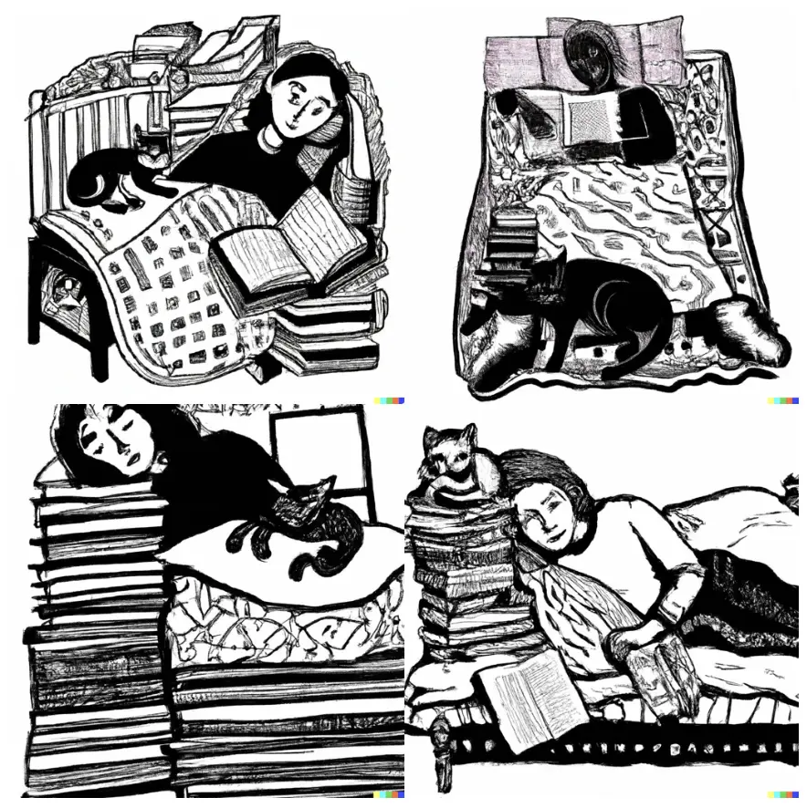
DALL-E. Composition is great (100% gets the prompt), but completely misses the mark on "linocut". I tried to work this into a useable drawing to carve, but because it uses fairly sketchy lines and fills, it ended up being way more work than I wanted.
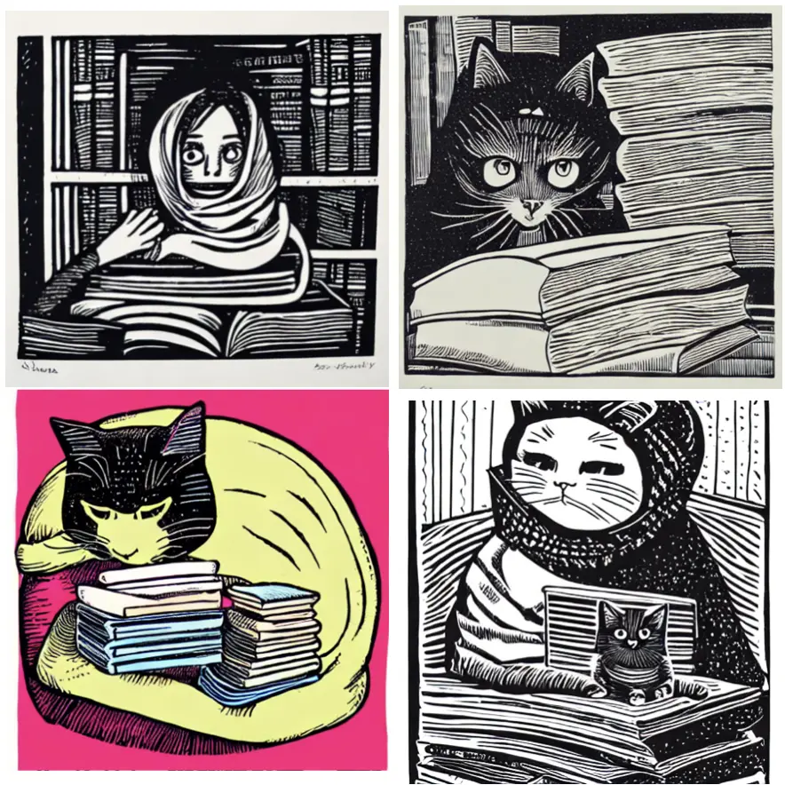
Stable diffusion. Composition is pretty good but doesn't actually interpret the prompt well. The "linocut" part is really well done -- I find it amazing that the top left image actually has a signature and a title outside of the print! Despite not getting the point, the top right result is my dream come true and what I'll end up using.
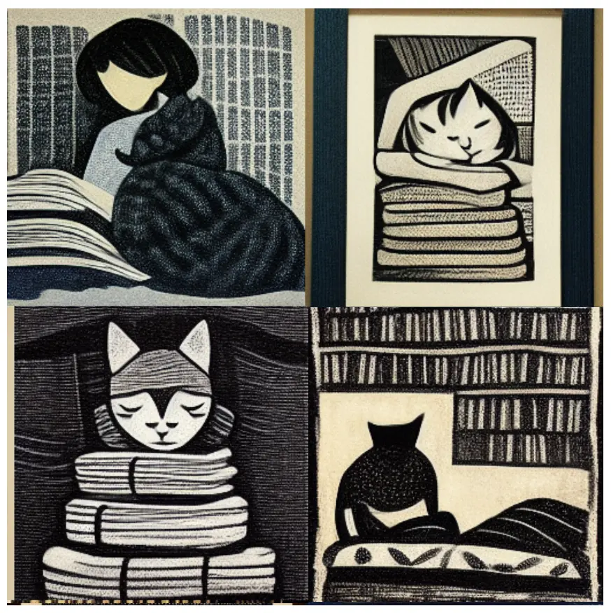
MidJourney. Also kind of misses the prompt, and doesn't have as many details as the Stable Diffusion results. I really like the bottom left the most, but I don't think it screams "cat with books" enough for me to use.
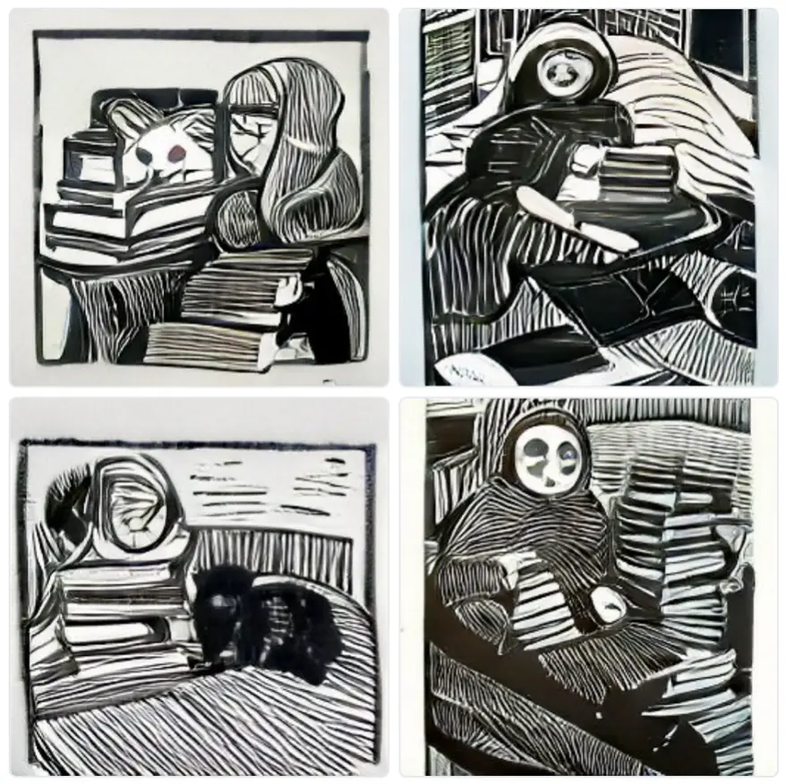
DALL-E mini. The results are kind of okay if you squint really hard, but not at all what I'm looking for. I just got laser eyes; I'm not about to go back to squinting.
2. “Lithograph of an orchid where each flower has a small skull inside”
What I am looking for: any semblance of an orchid not looking like an orchid. The “lithograph” part was a very loose requirement – I just wanted it to feel “pencilly” without looking like a child drew it, which is what DALL-E often does for “pencil drawing”. I spent a lot of time on this prompt with DALL-E (including looking up the technical biology terms for “the bit inside an orchid flower”), and I never got anything at all correct. It wasn’t until this blog post when I went to other models that I regained hope! MidJourney, man!
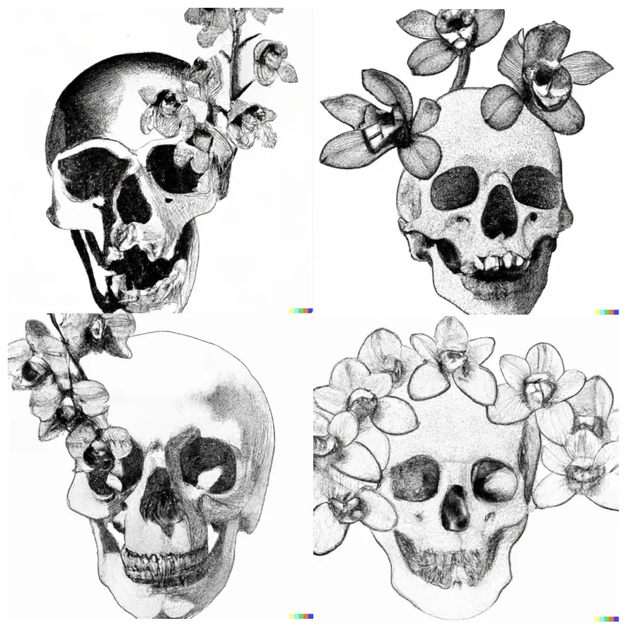
DALL-E. I remember I tried many combinations of writing "a skull inside each flower", and all I could ever get out of DALL-E was an orchid next to, or coming out of, a skull. I get bored after about half an hour of failing at a prompt; I'm sure there is a way to write this to get what I'm looking for, but I didn't figure it out, and I lost interest.
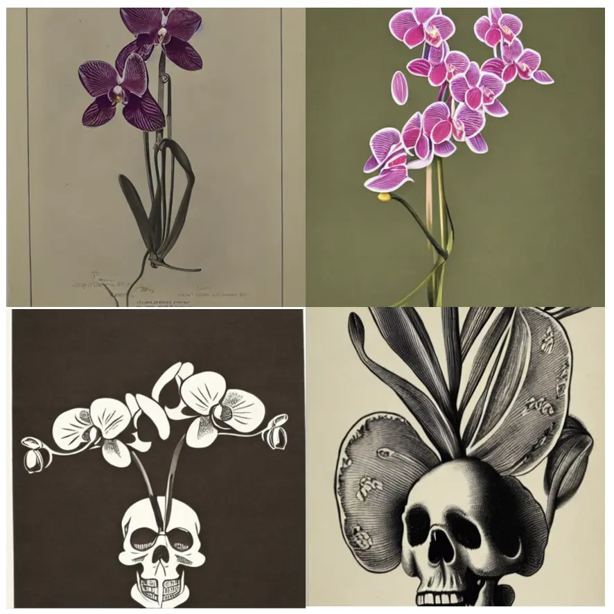
Stable diffusion. This one struggled with the prompt too. The bottom two results are really pretty, and in particular prettier than the equivalent (and misunderstood) DALL-E results, but still not even in the ballpark of what I was looking for
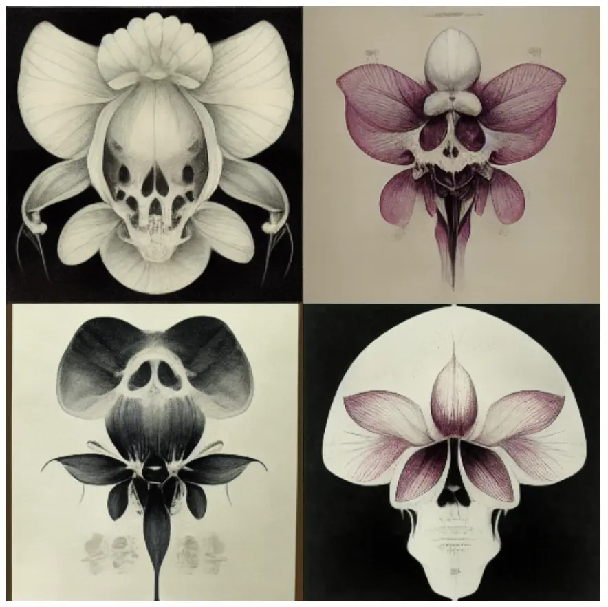
MidJourney. I mean, 10/10. These are the spooky orchid boys of my dreams! This prompt came up because I went to an orchid exhibition, and I thought so many of the little flowers looked like skulls or aliens. This was exactly what I had in mind.
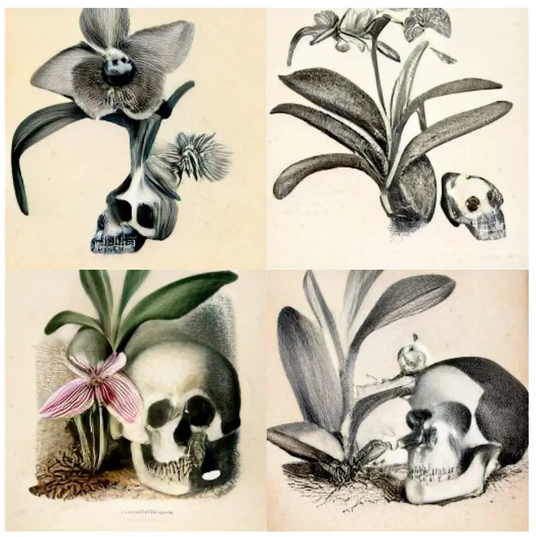
DALL-E mini. Suffers from the same prompt problems as the other models, which makes me think that whatever special tweaks MidJourney does to get "creativity" out of a prompt are absolutely working.
3. “Erik Johansson photograph of a woman[sic] hair that is a literal bee hive”
I love surrealism. I was watching this 60s movie where a bunch of women had beehive hairdos, and this is how my brain operates: “wouldn’t it be interesting if”? I don’t know what I was expecting to get, but it wasn’t any of this (though as someone who understands how these models work, in retrospect I understand exactly how we got here). I chose Erik Johansson because surreal photography is his jam, and it helped stir DALL-E towards more of the right vibes at the time. Unfortunately, I got really creeped out by most of the results (from all models tbh), and it’s really soured up this prompt for me.
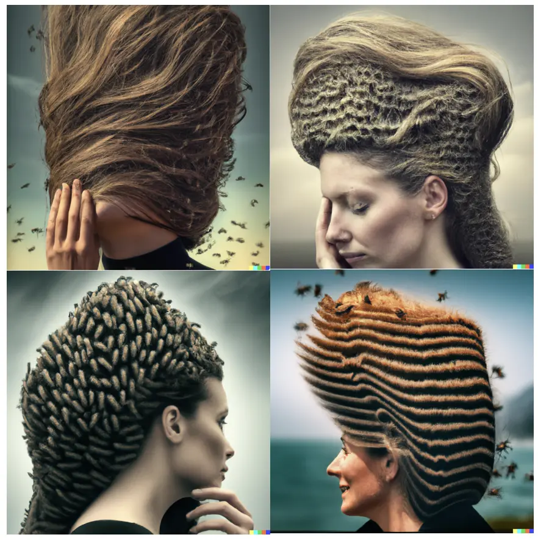
DALL-E. The uncanny valley of literal bee hives turns out to be deep. The top left image one is the nicest, possibly because a) it doesn't have a face and b) it only has casual bees. It is maybe the closest to what I wanted (out of all the outputs), but it doesn't make me feel great looking at it.
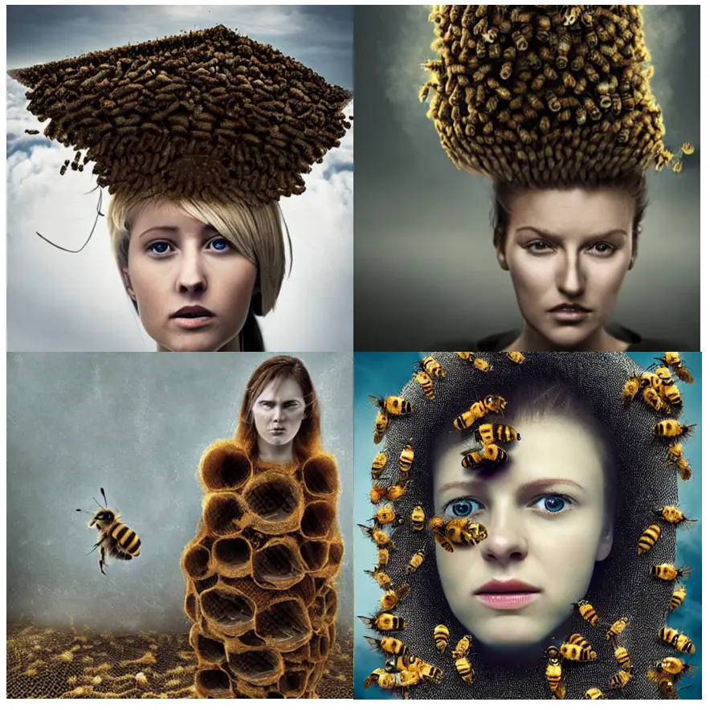
Stable diffusion. The people. They look like people. I don't like it. I think the top right one is the least disturbing?
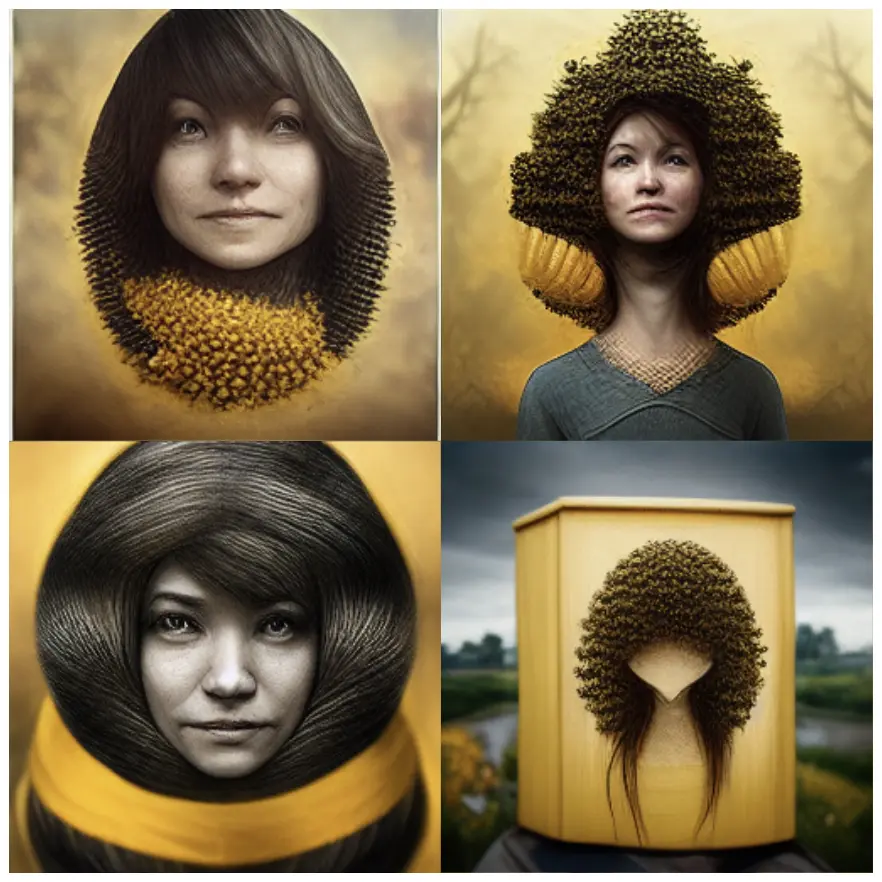
MidJourney. I find it incredibly fascinating that out of 8 images, they all have the same very specific style. Erik Johannson rarely uses people in his photography -- why is this very specific woman coming up? Also, I think the cutesy, not really photographic style really helps these outputs, tbh.
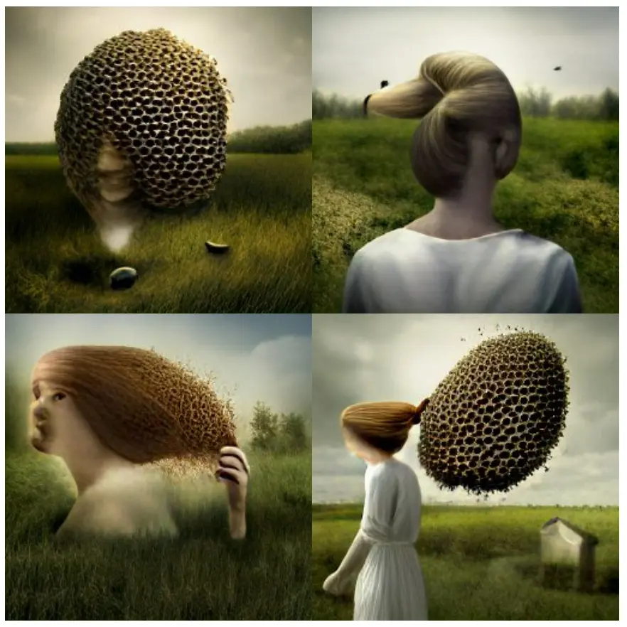
DALL-E mini. Poor model, this is the worst of the bunch, and I expected it. DALL-E mini isn't very good at realism; it gives very noisy people, or faces, and then shoves them through a potato. That, combined with (my bad) sheer creepiness of the prompt leads to a literal nightmare.
I cannot apologize enough to these models for making them go through this. You at least could’ve scrolled past this section; they, the poor darlings, couldn’t.
4. “A toucan wearing a 60s apron, sitting on a mid century modern armchair, talking on a rotary phone, retrofuturism”
And now, a palette cleanser. I had been doing some reading and learnt that DALL-E really likes commas and stacking up contexts, so that’s why this prompt is so detailed.
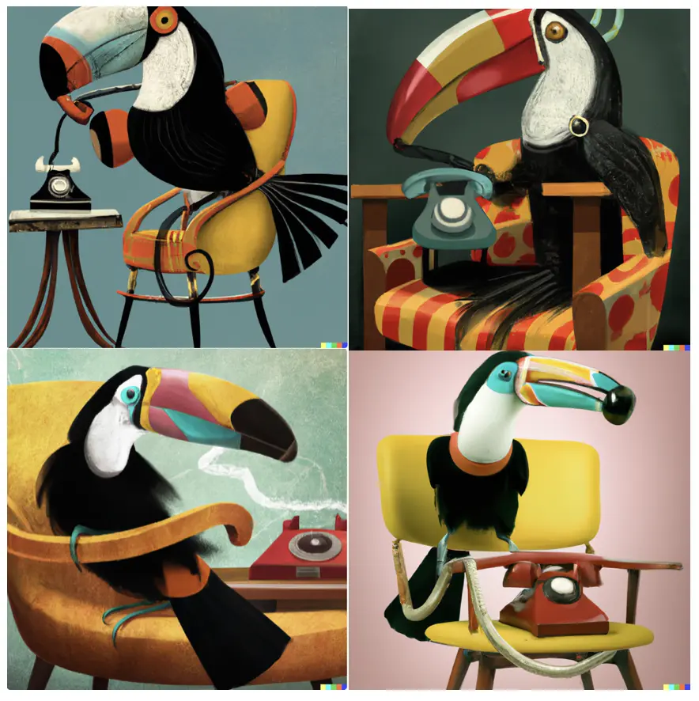
DALL-E. I expected DALL-E to do well, and it did. The toucan on the phone is there, the 60s vibe is there, the apron is dubiously missing but we'll give it a pass. It's got the fuzziness of old, spacey, retrofuturism posters (though the prompt has absolutely no actual futurism in it)
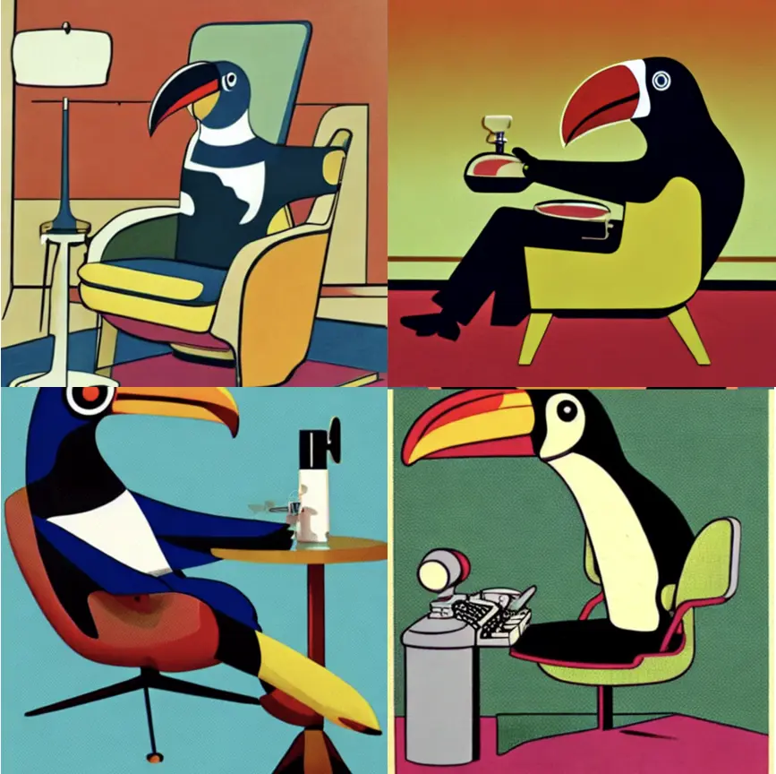
Stable diffusion. This isn't bad either. The art style is a little flatter (what is retrofuturism even?), but it's toucans doing their thing, some better than others.
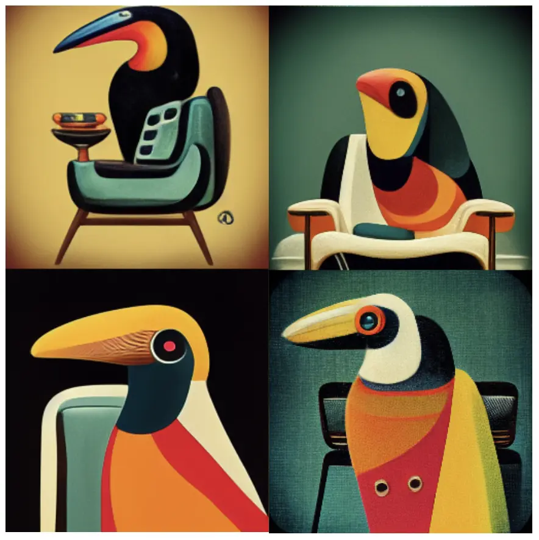
MidJourney. If you've ever played with MidJourney, this will strike you as having "very MidJourney vibes". This grainy, round style I see often, and I quite like. However, while it captures the style really nicely, the prompt is sort of a wash past the toucan.
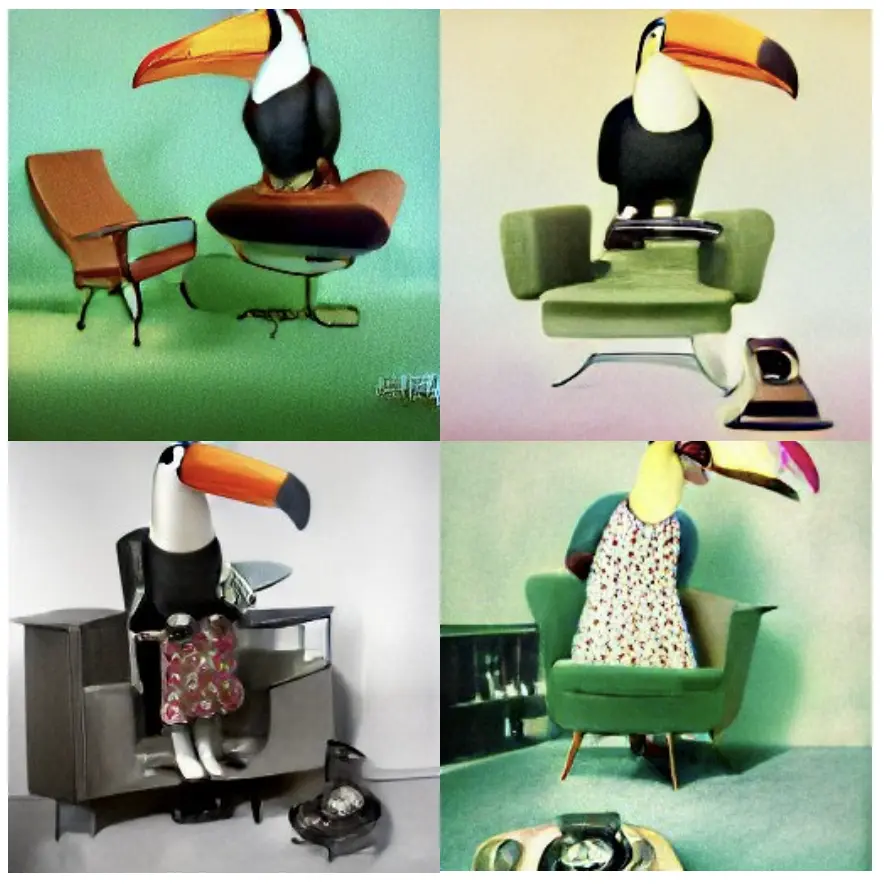
DALL-E mini. This is the first time I a) love this model the most and b) wish that it produced higher resolution images. Look at the aprons! Look at the furniture! In terms of concept, it's absolute perfection. In terms of execution, an absolute potato.
What have I learned?
I think the most important thing I’ve learnt from this experiment is that in terms of what I’m looking for (interesting hallucinations and not realism), DALL-E isn’t the end-all, be-all of models, and nor is MidJourney. The two freely available models are quite alright in some cases, especially if you’re looking for fast and free brainstorming. I think the workflow that I will try out next is to workshop the prompt using StableDiffusion/DALL-E mini, and then take that to the big boi DALL-E herself, and see what I can go from there.
In terms of model-specific lessons (knowing that it’s based on my weird experience with them, they’re not scientific and not necessarily applicable to what you are working on, etc. Don’t come for me, basically):
- MidJourney can be super creative, but can also fall into stylistic pits (see: the bees, the toucan)
- It’s hard to get DALL-E out of a realism pit without a ton of effort (see: the skull orchids)
- Stable Diffusion works surprisingly well for something I can run off a collab
- I don’t have a gut feeling as to why, but pretty much everyone except for Stable Diffusion is confused by what a linocut is (this is only interesting to me, someone who works on linocuts)
- DALL-E mini really understands what toucans want (JK)
- I should maybe steer clear of bees.
Thanks to Adam for helping me rework the intro, and giving me a subtitle; I can’t believe I missed a Strangelove opp.